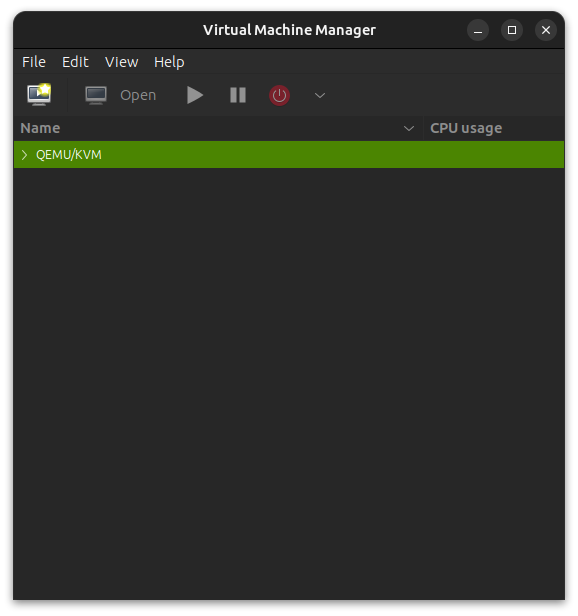
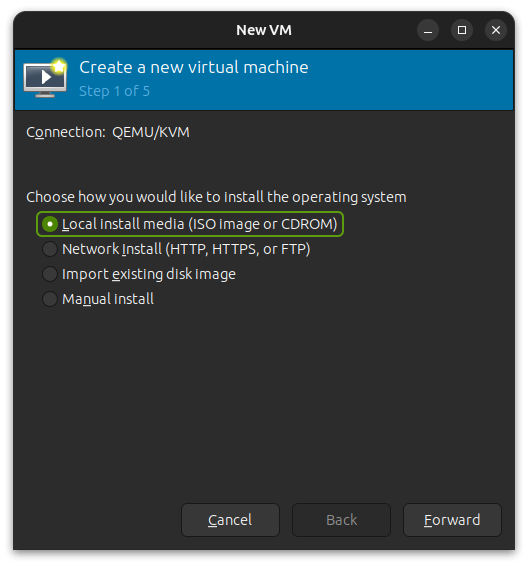
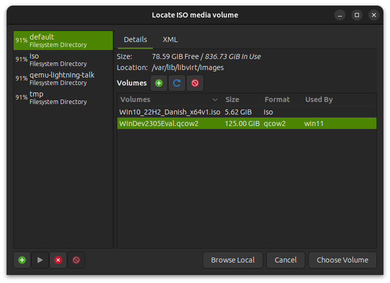
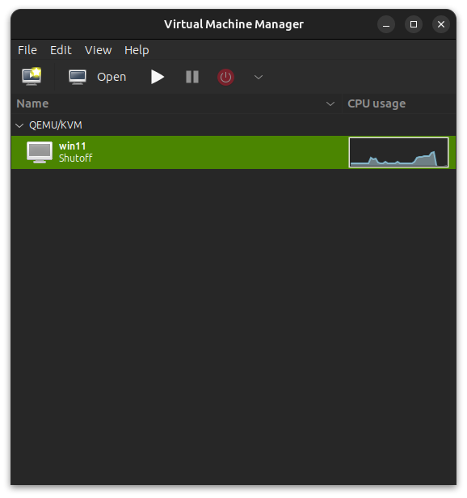
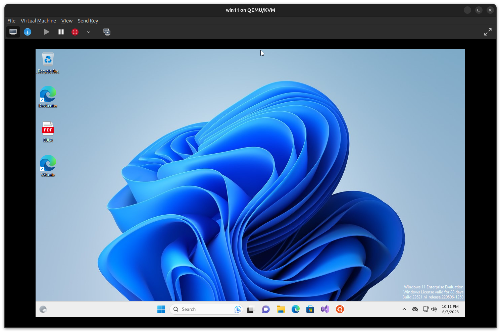
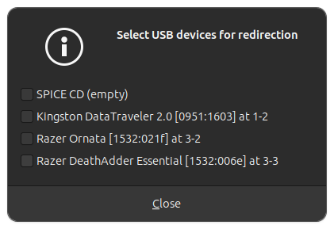
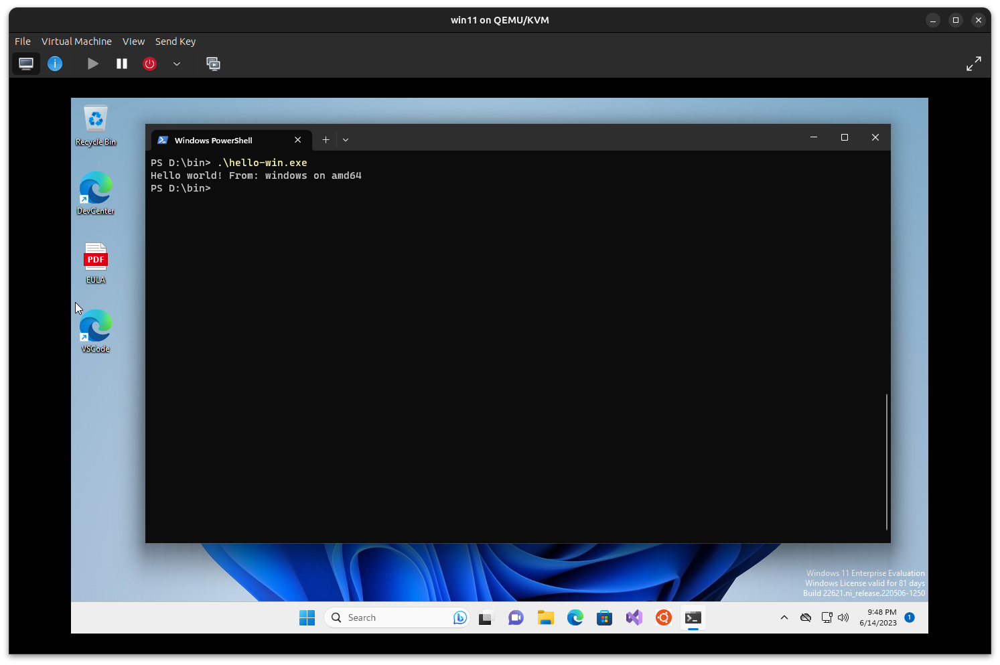

About me
Thomas Rasmussen

I work as a software developer/consultant at Gennemtænkt IT
- working primarily on the JVM using Groovy and Grails


Thomas Rasmussen
15. June, 2023
Thomas Rasmussen
I work as a software developer/consultant at Gennemtænkt IT
- working primarily on the JVM using Groovy and Grails


Verify virtualization is enabled
$ egrep -c '(vmx|svm)' /proc/cpuinfo
12Virtual Machine Extensions (vmx) = Intel
Secure Virtual Machine (svm) = AMD
If the value is zero check your BIOS settings…
Install QEMU (the virtualization part)
$ sudo apt install qemu-kvmFor emulating different CPU architectures install
$ sudo apt install qemu-userMy system is an Intel/AMD X86_64 based system running Ubuntu
$ uname -a
Linux 6.2.0-20-generic #20-Ubuntu SMP PREEMPT_DYNAMIC Thu Apr 6 2023 x86_64 x86_64 x86_64 GNU/LinuxA simple “hello world” program written in Go-lang
Hello world in Go-lang - download src
and cross compiled for different CPU architectures and operating systems:
Script for compiling - download src
$ file hello-arm64
hello-arm64: ELF 64-bit LSB executable, ARM aarch64, version 1 (SYSV), statically linked, Go BuildID=ZgcKY7b7tAM4fTfkEmcR..., not stripped
$ file hello-arm32
hello-arm32: ELF 32-bit LSB executable, ARM, EABI5 version 1 (SYSV), statically linked, Go BuildID=6mnYLXKGBcNxSMYhaM56..., not stripped
$ file hello-x84
hello: ELF 64-bit LSB executable, x86-64, version 1 (SYSV), statically linked, Go BuildID=e-dT_OvB22dfzXKqhiNI..., not stripped
$ file hello-win.exe
hello-win.exe: PE32+ executable (console) x86-64 (stripped to external PDB), for MS Windows, 13 sectionsRunning the different “hello world” programs
$ ./hello-x64
Hello world! From: linux on amd64
$ ./hello-arm32
bash: ./hello-arm32: cannot execute binary file: Exec format error
$ qemu-arm hello-arm32
Hello world! From: linux on arm
$ qemu-arm hello-arm64
qemu-arm: hello-arm64: Invalid ELF image for this architecture
$ qemu-aarch64 hello-arm64
Hello world! From: linux on arm64
$ ./hello-win.exe
bash: ./hello-win.exe: cannot execute binary file: Exec format error
$ qemu-x86_64 hello-win.exe
Error while loading hello-win.exe: Exec format errorQEMU does more than letting us run applications written for different CPU architectures it also lets us run other complete Operating Systems
Kubuntu 22.04.2 Desktop AMD64 ISO
Get a Windows 11 development environment
I downloaded the WinDev2305Eval.VirtualBox.zip for Virtualbox
QEMU doesn’t run Virtualbox .ova files, they need to be
converted from .ova to .qcow2 (QEMU Copy-On-Write
version 2) format.
$ unzip WinDev2305Eval.VirtualBox.zip
$ tar -xvf WinDev2305Eval.ova
$ ls
WinDev2305Eval.ova
WinDev2305Eval-disk001.vmdk
WinDev2305Eval.ovf
$ qemu-img convert WinDev2305Eval-disk001.vmdk WinDev2305Eval.qcow2 -O qcow2Create .img file (virtual harddisk)
$ qemu-img create -f qcow2 Image.img 10GUsing the cli
$ qemu-system-x86_64 -enable-kvm -cdrom ../iso/kubuntu-22.04.2-desktop-amd64.iso -boot menu=on \
-drive file=Image.img \
-m 4G -cpu host -smp 4 -vga virtio -display sdl,gl=on \-m memory/RAM
-cpu host - Host CPU og guest are the same in this case so no emulation needed
-smp number of CPU cores
-vga better graphichs through virtio
-display sdl gl=on enables OpenGL for smoother graphics
And many many more options…
We’ll use the QEMU GUI this time
Install relevant utils
$ sudo apt -y install bridge-utils cpu-checker libvirt-clients libvirt-daemon libvirt-daemon-systemStart libvirtd for virt-manager
$ sudo systemctl start libvirtd
$ sudo systemctl enable libvirtdAdd user to relevant groups
$ sudo usermod -aG libvirt $USER
$ sudo usermod -aG kvm $USER
$ groups
thomas adm cdrom sudo dip plugdev kvm lpadmin lxd sambashare docker libvirtInstall virt-manager
$ sudo apt install virt-manager$ virt-manager

virt-manager looks for images at this location
/var/lib/libvirt/images
Select the virtual machine you want to run


From the Virt-Manager menu select
Virtual Machine > Redirect USB deviceAnd select the USB drive from the list

We can now run the for Windows compiled “hello world” program

A quick way to share files between host and guest is to create an ISO image containing the files
$ mkisofs -J -o ./cd.iso ./share/You might have to install mkisofs
$ sudo apt install genisoimageThen add the -cdrom parameter to the commandlist when
starting qemu
$ qemu-system-x86_64 ... \
-cdrom ./cd.isoAnother option is to mount folders on the host machine into the guest machine using 9p virtio as the transport for sharing files
$ qemu-system-x86_64 ... \
-drive file=Image.img,if=virtio \
-fsdev local,security_model=passthrough,id=fsdev0,path=./share \
-device virtio-9p-pci,id=fs0,fsdev=fsdev0,mount_tag=hostshare \For an explanation of the parameters se Example Sharing Host files with the Guest
On the guest you now have to mount the shared folder
$ mkdir /tmp/host_files
$ mount -t 9p -o trans=virtio,version=9p2000.L hostshare /tmp/host_filesQEMU supports snapshots - if you break something while testing just go back to previous snapshot
QEMU also supports temporary snapshots, where any changes made to the virtual machine while it is running are written to temporary files
CTRL + ALT + G : Get your mouse back from the emulator
CTRL + ALT F : Fullscreen emulator window